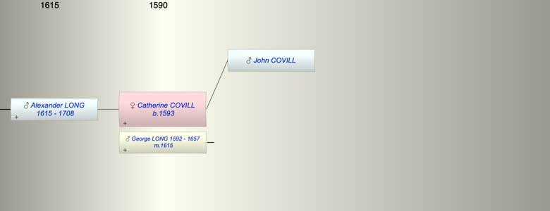

| [Index] |
| Catherine COVILL (1593 - ) |
|  |
| b. abt 1593 |
| m. 07 Jun 1615 George LONG (1592 - 1657) at Woodnesborough |
| Parents: |
| John COVILL |
| Children (1): |
| Alexander LONG (1615 - 1708) |
| Grandchildren (1): |
| Alexander LONG (1647 - 1731) |
| Events in Catherine COVILL (1593 - )'s life | |||||
| Date | Age | Event | Place | Notes | Src |
| abt 1593 | Catherine COVILL was born | ||||
| 1615 | 22 | Birth of son Alexander LONG | bap 8 Sep 1615 | ||
| 07 Jun 1615 | 22 | Married George LONG (aged 23) | Woodnesborough | Note 1 | |
| 1657 | 64 | Death of husband George LONG (aged 65) | |||
| 09 Sep 1708 | 115 | Death of son Alexander LONG (aged 93) | St Laurence | Note 2 | |
| Personal Notes: |
|
There is a baptism of Catherine Covill bap 23 Mar 1594/5 at St Clement, Sandwich (transcribed as Katherine Couell no parents given) ex FMP PR .
There is a contemporary Coville family at Sandwich headed by John Coville who could be Catherine’s father. John Coville married: 1) Joan Spell (Spoll) 14 Nov 1587 St Peter Sandwich both of Sandwich ex FMP PR. Their children appear to be (all of John, no mother recorded): Mathew bap 13 Dec 1588 St Peter and buried 29 Jan 1588 ex FMP Alice bap 18 Jan 1589 St Peter Sandwich and buried 14 Aug 1590 (dau of John at St Peter) ex FMP John bap St Peter 18 Jan 1589 ex FMP Alice bap 13 Jun 1591 St Peter ex FMP PR Joan Covyll wife of John was buried 2 Aug 1591 St Peter, Sandwich ex FMP PR. She was probably Joan Spoill bap 4 Nov 1565 at St Mary the Virgin, Eastry daughter of Gilbert ex FMP PR (very difficult to read). 2) Tomasine Marden 25 Oct 1591 at St Peter Sandwich ex FMP PR. They had: John bap 27 Aug 1592 St Peter son of John ex FMP PR burial? John bap 11 Nov 1593 St Peter son of John ex FMP PR Catherine could be the daughter of John and Thomasine and she would fit after John baptised Nov 1593 but why would she be baptised at a St Clements when all the other family events relating to John Covill were at St Peters . Some support for John and Thomasine being her parents is Catherine had a daughter Thomasine. |
| Created on a Mac™ using iFamily for Mac™ on 8 Oct 2023 |